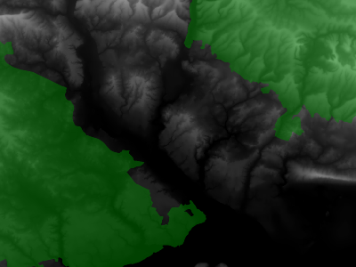
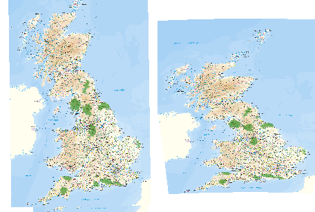

WEB Map Service (WMS)¶
How can we publish a map over the web?¶
If we use HTTP requests all of these might be valid:
{kind=link}
Let’s agree on the URL format¶
If we agree about how to encode the URL the following HTTP GET request will get a map from a province of the Basque Country in Spain
http://b5m.gipuzkoa.net/ogc/wms/gipuzkoa_wms?
service=wms&
version=1.3.0&
request=getmap&
layers=udal_barrutiak_limites_municipales&
styles=&
crs=epsg:23030&
bbox=530000,4740000,610000,4820000&
width=600&
height=600&
format=image/png
http://b5m.gipuzkoa.net/ogc/wms/gipuzkoa_wms?
service=wms&
version=1.3.0&
request=getmap&
layers=udal_barrutiak_limites_municipales&
styles=&
crs=epsg:23030&
bbox=530000,4740000,610000,4820000&
width=600&
height=600&
format=image/png
WMS¶
The OGC Web Map Service Interface Standard (WMS) defines a set of interfaces (e.g. the rule of how to encode the URL) for requesting map images over the Internet.
WMS makes it easy for a client to request images on demand changing parameters such as size and coordinate reference systems.
WMS Server¶
Provides information about what maps a service can produce
Produces a Map
Answers queries about content of a Map
Benefit¶
WMS clients can request images from multiple WMS servers, and then combine them into a single view for the user.
The standard guarantees that these images can all be overlaid on one another using a common geospatial coordinate reference system.
Hundreds of servers and clients support WMS.
Relation to other OGC Standards¶
OGC Web Map Tile Service Interface Standard (WMTS): The WMTS standard is a better fit For highly scalable systems (many simultaneous requests) that only need static maps. It complements the WMS standard with cachable static map tiles. WMS servers can be used as data sources or rendering engines for WMTS services.
OGC Web Feature Service (WFS): The WFS standard is a better fit for extended query functionality of spatial data. It provides programmatic access to the geographic feature data. WMS and WFS often go together. An organization publishing both WMS and WFS often use the same data source.
Overview of WMS Operations¶
WMS Operations¶
GetCapabilities
GetMap
GetFeatureInfo (Optional)
DescribeLayer (Optional)
GetLegendGraphic (Optional)
GetCapabilities¶
Returns metadata about a WMS server, including how to generate WMS requests and what parameters can be used.
The metadata includes supported image formats and the availability of layers.
Metadata for each layer include: bounding box, coordinate reference system, URI of the data and whether the layer is mostly opaque or not.
GetCapabilities Demonstration¶
This is a link to a GetCapabilities request.
http://metaspatial.net/cgi-bin/ogc-wms.xml?
SERVICE=WMS&
VERSION=1.3
REQUEST=GetCapabilities&
GetCapabilities Parameters¶
There are three parameters (and values) being passed to the WMS server, SERVICE=WMS, VERSION=1.3, and REQUEST=GetCapabilities.
The
SERVICEparameter tells the server that a WMS request is forthcoming.The
VERSIONparameter tells the server what version of the WMS is being requested.The
REQUESTparameter tells the server that the operation requested is the GetCapabilities operation.
GetCapabilities Parameters and Accepted Values¶
Parameter |
Required |
Description |
|---|---|---|
|
Yes |
Service name. Value is |
|
Yes |
Service version. Value is one of |
|
Yes |
Operation name. Value is |
GetCapabilities Response¶
The response is a Capabilities XML document with a detailed description of the WMS service. It contains three main sections:
Service |
Contains service metadata such as the service name, keywords, and contact information for the organization operating the server. |
Request |
Describes the operations the WMS service provides and the parameters and output formats for each operation. |
Layer |
Lists the available coordinate systems and layers. In some servers (e.g. Geoserver) layers are named in the form “namespace:layer”. Each layer provides service metadata such as title, abstract and keywords. |
GetCapabilities Layer Style Section¶
The GetCapabilites response contains a Layer section, which details about the style available to that layer. In the example bellow the available style is default.
GetCapabilities - Layer¶
<Layer queryable="0" opaque="0" cascaded="0">
<Name>nationalparks</Name>
<Title>National Parks</Title>
<EX_GeographicBoundingBox>
<westBoundLongitude>-4.43064</westBoundLongitude>
<eastBoundLongitude>1.99728</eastBoundLongitude>
<southBoundLatitude>50.3532</southBoundLatitude>
<northBoundLatitude>55.5917</northBoundLatitude>
</EX_GeographicBoundingBox>
<BoundingBox CRS="EPSG:27700"
minx="246828" miny="56378.4" maxx="652374" maxy="633117"/>
<Style>
...
</Style>
</Layer>
GetCapabilities Layer Style Section¶
<Layer queryable="0" opaque="0" cascaded="0">
...
<Style>
<Name>default</Name>
<Title>default</Title>
<LegendURL width="110" height="22">
<Format>image/png</Format>
<OnlineResource xmlns:xlink="http://www.w3.org/1999/xlink"
xlink:type="simple"
xlink:href="..."/>
</LegendURL>
</Style>
</Layer>
GetMap¶
Returns a map image.
Parameters specified in the GetMap request include: width and height of the map, coordinate reference system, rendering style and image format.
The information needed to specify values for parameters such as
layers,stylesandSpatial Reference Systems (SRS)can be obtained from the Capabilities document.
GetMap - Request Example¶
http://metaspatial.net/cgi-bin/ogc-wms.xml?
VERSION=1.3.0&
REQUEST=GetMap&
SERVICE=WMS&
LAYERS=DTM,Overview,Raster_250K,Topography,nationalparks,Infrastructure,Places&
STYLES=,,,,,,&
CRS=EPSG:27700&
BBOX=424735.97883597884,96026.98412698413,467064.02116402116,127773.01587301587&
WIDTH=400&
HEIGHT=300&
FORMAT=image/png&
BGCOLOR=0xffffff&
TRANSPARENT=TRUE&
EXCEPTIONS=XML
Example Image from a GetMap request¶

GetMap - Request¶
...
LAYERS=DTM,Overview,Raster_250K,Topography,nationalparks,Infrastructure,Places
...
CRS=EPSG:27700&
BBOX=424735.97883597884,96026.984126984...
WIDTH=400&
HEIGHT=300&
FORMAT=image/png&
BGCOLOR=0xffffff&
TRANSPARENT=TRUE&
EXCEPTIONS=XML
The service provides seven map layers: DTM, Overview etc.
The coordinate reference system EPSG:27700 is the Ordnance Survey National Grid reference system.
The image returned is a PNG transparent format with width 400 and height 300 pixels, and background color is white (Hex code=0xffffff).
GetMap - Request - Example 2¶
GetMap without the Overview Layer.
{kind=link}
LAYERS=DTM,Raster_250K,Topography,nationalparks,Infrastructure,Places
GetMap Transparency / Translucency¶
The map image can be overlayed with maps from other servers. In those cases it may be helpful to request the top level image in a format which supports a transparency such as the alpha channel. Then we can see what is below this map image.

GetMap Scale Limits¶
It is important to understand that every layer can have scale limits when it is not displayed. For example it would not make sense to display the “Overview” and “Raster_250K” at the same time because they contain the same data but with different levels of generalization. So instead they have mutually exclusive scale limits so that they will never be returned in one image. The scale limits are set by the server and do not have to be configured by the client.
<Name>Raster_250K</Name>
<MaxScaleDenominator>60000</MaxScaleDenominator>
<MinScaleDenominator>250000</MinScaleDenominator>
<Name>Overview</Name>
<MinScaleDenominator>250000</MinScaleDenominator>
GetMap - Zooming¶
The client can “zoom in” and “zoom out” of the map by calculating new values for the BBOX (bounding box) parameter. The same applies to all map navigation functions like panning or selecting a completely new area.
It is important to note that the server only returns an image to the client, but no additional information about the size, coordinate system, scale, etc
Squashed Map¶
Happens when a with a width to height ratio is other than 1:1 For example when saying WIDTH=200&HEIGHT=300?

Reprojecting Maps¶
Change the parameter: CRS Left is the original CRS=EPSG:22770 and on the right hand side CRS=EPSG:4326.
{kind=link}
GetMap - Parameters¶
Parameter |
Required |
Description |
|---|---|---|
|
Yes |
Service name. Value is |
|
Yes |
Service version. Value is one of |
|
Yes |
Operation name. Value is |
|
Yes |
Layers to display on map. Value is a comma-separated list of layer names. |
|
Yes |
Styles in which layers are to be rendered. Value is a comma-separated list of style names, or empty if default styling is required. Style names may be empty in the list, to use default layer styling. |
|
Yes |
Spatial Reference System for map output.
Value is in form |
|
Yes |
Bounding box for map extent.
Value is |
|
Yes |
Width of map output, in pixels. |
|
Yes |
Height of map output, in pixels. |
|
Yes |
Format for the map output. |
|
No |
Whether the map background should be transparent.
Values are |
|
No |
Background color for the map image.
Value is in the form |
|
No |
Format in which to report exceptions.
Default value is |
|
No |
Time value or range for map data. |
|
No |
A URL referencing a StyledLayerDescriptor XML file which controls or enhances map layers and styling |
|
No |
A URL-encoded StyledLayerDescriptor XML document which controls or enhances map layers and styling |
GetFeatureInfo¶
Returns information (e.g. data) associated to a coordinate of the map image. The layer supporting this operation is marked as ‘queryable’.
It is similar to the WFS GetFeature operation, but less flexible in both input and output.
The one advantage of
GetFeatureInfois that the request uses an (x,y) pixel value from a returned WMS image.This is easier to use for a naive client that is not able to perform true geographic referencing.
GetFeatureInfo¶
Before querying for objects we need to see a map. We use the GetMap request to get a map image:
http://metaspatial.net/cgi-bin/ogc-wms.xml?
VERSION=1.3.0&
REQUEST=GetMap&
SERVICE=WMS&
LAYERS=Overview,Raster_250K,nationalparks,Topography,Infrastructure,osm_points&
WIDTH=400&
HEIGHT=300&
CRS=EPSG:27700&
BBOX=427966.6666666667,106800,431833.3333333333,109700&
FORMAT=image/png&
EXCEPTIONS=XML
The result will look like this:¶

In the next step the user has to click into the map. Let’s assume the user has clicked the position:
X=231
Y=280
Then the client do this request¶
http://metaspatial.net/cgi-bin/ogc-wms.xml?
VERSION=1.3.0&
REQUEST=GetFeatureInfo&
SERVICE=WMS&
LAYERS=osm_points&
QUERY_LAYERS=osm_points&
WIDTH=400&
HEIGHT=300&
CRS=EPSG:27700&
BBOX=427966.6666666667,106800,431833.3333333333,109700&
INFO_FORMAT=text/html&
EXCEPTIONS=XML&
X=231& Y=280
Link to the GetFeatureInfo request.
GetFeatureInfo - Response in HTML¶
If the server has found features it will return them in the requested format. In this example the server finds a pub called “The Crown Stirrup” and a bus stop named “Ye Old Crown and Stirrup” and returns them in an HTML file.

GetFeatureInfo - Response in GML¶
<osm_points_feature>
<gml:boundedBy>
<gml:Box srsName="EPSG:27700">
<gml:coordinates>
430172.215950,107071.994504 430172.215950,107071.994504
</gml:coordinates>
</gml:Box>
</gml:boundedBy>
<osm_id>503420358</osm_id>
<timestamp>2009-09-20T16:44:15Z</timestamp>
<name>Ye Old Crown and Stirrup</name>
<type>bus_stop</type>
</osm_points_feature>
</osm_points_layer>
Marking layers telling clients that GetFeatureInfo is available¶
In the GetCapabilities document the layer should have queryable=”1”
<Layer queryable="1" opaque="0" cascaded="0">
<Name>osm_points</Name>
<Title>OpenStreetMap point objects</Title>
<CRS>EPSG:4326</CRS>
GetFeatureInfo - Parameters¶
Parameter |
Required |
Description |
|---|---|---|
|
Yes |
Service name. Value is |
|
Yes |
Service version. Value is one of |
|
Yes |
Operation name. Value is |
|
Yes |
Comma separated list of layers to be queried` |
|
No |
Format for the feature information response (MIME type). |
|
No |
Maximum number of features to return. Default is 1. |
|
Yes |
Pixel column point on the map. 0 is left side.
|
|
Yes |
Pixel row on the map. 0 is the top.
|
|
No |
Format in which to report exceptions.
The default value is |
GetFeatureInfo - INFO_FORMAT parameter¶
Format |
Syntax |
Notes |
|---|---|---|
TEXT |
info_format= text/plain |
Simple text output. (The default format) |
GML 2 |
info_format= application/vnd.ogc.gm |
Works only for Simple Features |
GML 3 |
info_format= application/vnd.ogc.gml/3.1.1 |
Works for both Simple and Complex Features |
HTML |
info_format= text/html |
Uses HTML templates that are defined on the server. |
JSON |
info_format= application/json |
Simple JSON representation. |
GetLegendGraphic¶
Returns a legend, as an image, for the map image, providing a visual guide to the map elements.
Getting a legend via GetLegendGraphic¶
Link to GetLegend request.
http://metaspatial.net/cgi-bin/ogc-wms.xml?
version=1.3.0&
service=WMS&
request=GetLegendGraphic&
sld_version=1.1.0&
layer=nationalparks&
format=image/png&
STYLE=default

DescribeLayer¶
Returns additional information about the requested layer.
Wrong requests¶
If the request is wrong the server will return an error message.
The request specifies how the client would like to receive the request. For example:
EXCEPTIONS=XML
Error Messages¶
In case the client causes an error by formulating a wrong request the server will return an error message. For example if requesting a non existing layer, the server will return the following:
<?xml version='1.0' encoding="ISO-8859-1" standalone="no" ?>
<ServiceExceptionReport version="1.3.0" xmlns="http://www.opengis.net/ogc"
xmlns:xsi="http://www.w3.org/2001/XMLSchema-instance"
xsi:schemaLocation="http://www.opengis.net/ogc
http://schemas.opengis.net//wms/1.3.0/exceptions_1_3_0.xsd">
<ServiceException code="LayerNotDefined">
msWMSLoadGetMapParams(): WMS server error.
Invalid layer(s) given in the LAYERS parameter.
A layer might be disabled for this request.
Check wms/ows_enable_request settings.
</ServiceException>
</ServiceExceptionReport>
INIMAGE Error Messages¶
One problem with the previous message is that the client cannot display the message in the image display window. To prevent this from happening we can change the format of the error message (the EXCEPTIONS parameter) to INIMAGE. In that case we can see the error message printed into an image:
INIMAGE Error Message¶

Exceptions¶
A WMS Server reports an exception when a request from a client is not correct.
Format |
Syntax |
Notes |
|---|---|---|
XML |
|
The error is described in XML. |
PNG |
|
The error is return as an image. |
Blank |
|
A blank image is returned. |
JSON |
|
The error is reported as a simple JSON representation. |